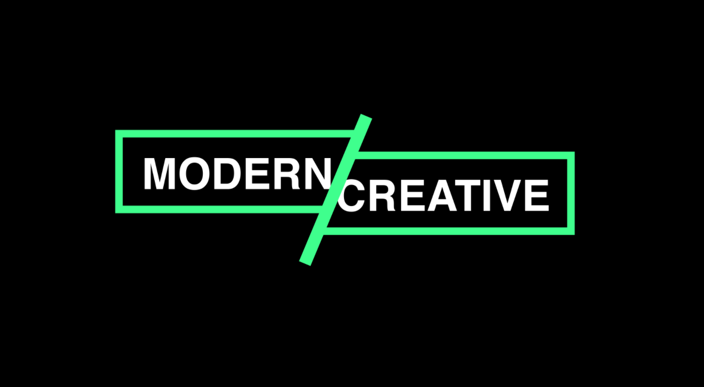
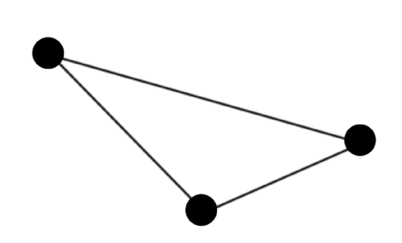
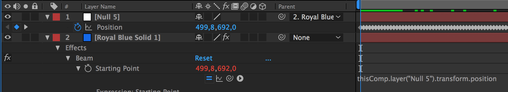
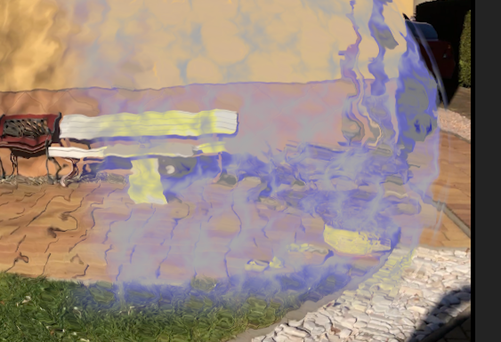

Advanced AE
29/10/2019
Spliced text
- 1 - create Main and Text compositions, type text, open Main and drag text into main
- 2 - create green rectangle around the text, click add -> Trim path
- 3 - animate its end property from 0 to 100 over 1s, and offset -90 to 0 over 1s (ease in and edit speed graph), click
- 4 - animate Text position fly to to the rectangle from out
- 5 - create new gray rectangle, drag under line (layers: line - M - Text)
- 6 - click Text - Alpha matte M
- 7 - create green line (Stroke) and animate it through center of the rectangle, add Trim Path, and animate from 0 (3s) to 100 (4s)
- 8 - create new adjustment layer, (R) and rotate it to match the left side of slied image
- 9 - add transform to it, hit position keyframe, drag to desired position and change order to: Stroke, R, Line, M, Text
- 10 - select all layers -> pre compose, crop to where animation ends, duplicate
- 11 - click first - Time reverse, drag in time behind the first
- 22/8/2018
SOURCE: https://www.youtube.com/watch?v=I7kBf8q8EB8&list=PLgXLFndHG444Ps96WKlAmpjOL5WwcLI6M&t=26s&index=28

Plexus effect
- 1 - new composition, 3 circles on separate layers
- 2 - center their anchor points (Y - Pan Behind)
- 3 - P, alt + click stopwatch and write wiggle(1, 400)
- 4 - new Solid (cmd + y), effect - generate - beam (black, width 100%)
- 5 - alt + click starting and ending points, drag with whip tool (starting point - circle 1 position, ending - circle 2 position)
- 6 - duplicate the solid and change start and end values
- so: beam 1: start c2, end c1, beam 2: start c3, end c1, beam 3: start c3, end c2
- 22/8/2018

Motion tracking
- 1) Import footage of fingers with a dot by sharpee
- 2) Tracker -> Track motion button, move the track point to the dot on the finger (repeat for the second finger)
- 3) Create 2 new null objects
- 4) In tracker panel -> motion source (the clip)
- 5) Edit target (choose the null) -> apply -> OK
- 6) add new solid
- 7) Effect -> generate -> beam
- 8) alt + click the stopwatch in effects control to access expressions
- 9) drag from the "whip button" of the starting point to the position property of the null 5 object (repeat twice)

Advanced Camera
- 1 - create 3 circle on separate layers, toggle switches
- 2 - check cube checkbox
- 3 - layer new camera - 2 nodes
- 4 - change view to 2 views - horizontal
- 5 - bring one circle closer by editing Z position
- 6 - camera - depth of field ON
- 7 - change aperture to 1000,
- 8 - and animate camera Z position (-3000 to -6000)
- Animation - keyframes assistant, ease ease
- 23/8/2018
Shield effect
- 1) new new solid
- 2) Turbulent noise dynamic progressive
- contrast: 96
brightness: 14
animate moving right to left
alt click evolution.. type in "time * 250"
- 3) effect -> perspective -> CC Sphere
- Shading: ambient: 100, difusion: 0
- Render: inside
- 4) select solid -> screen mode
- 5) Gaussian blur: 10, Vector blur: 70, constant length
- 6) Duplicate layers -> pre compose -> screen mode
- 7) Edit transparency blur
- 8) create 2 masks (left and bottom of the sphere) - feather
- 9) new adjustment layer -> displacement map -> apply to shield (68, 16)
- 10) animate scale (33 - 100 - 95) to create blend in effect
1/1/2018
